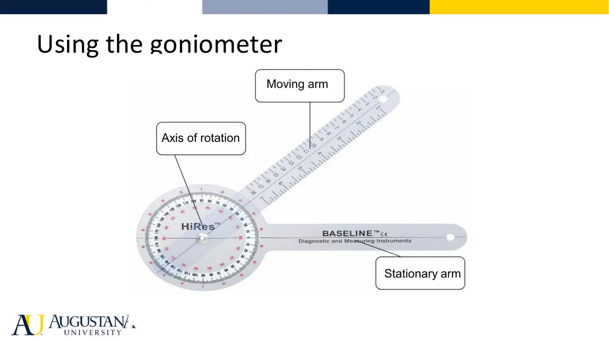
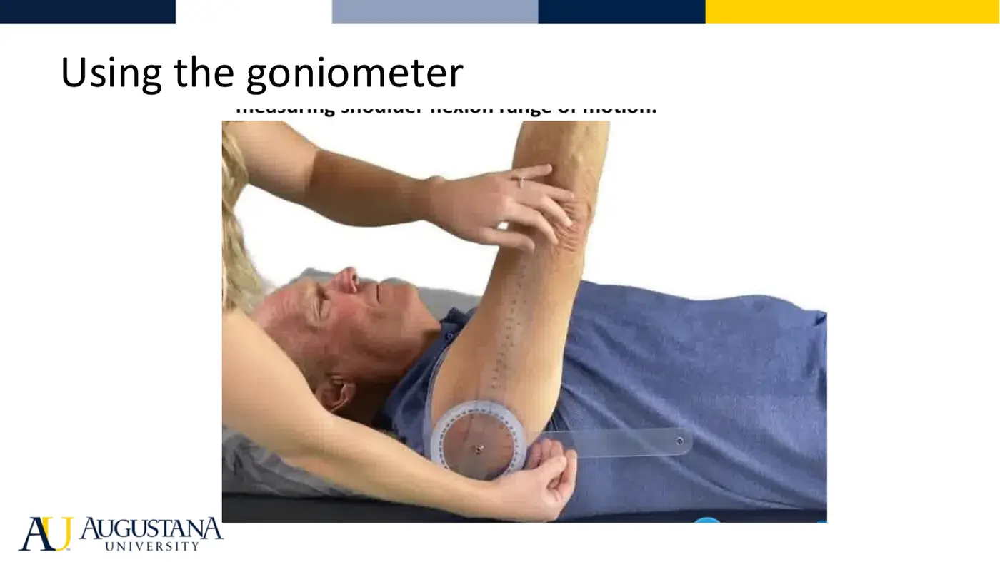

Physical Therapy Fundamentals · 6211
Module 4 — Joint Motion, Mobility & Measuring ROM
Topics: 4.1 Introduction to Joint Motion/Mobility • 4.2 Measuring ROM • Sync: goniometry, selective tissue tension, end feels
📖 How to Use These Notes
- Best used with the lecture playing — keep these open, follow along, and add your own notes as you watch
- Lecture banners mark the start of each topic and run in the same order as the videos
- 🎙 Callouts = direct insights from the instructor's transcript
- ★ Tips = exam-relevant content or things the instructor told you to prepare
- Figures are taken directly from the module's slide decks
- Each topic ends with its own Quick-Reference Glossary
- Written from last year's recordings — if a lecture has been re-recorded or resequenced, Canvas wins
- Watch Dr. Bartley's 19:57 intro lecture in your own Canvas module — handout + transcript are in this Drive folder
- PhysioU carries the how-to videos for EVERY joint region — those placements are exactly what your recorded video and practical are graded on
- Keep Fairchild Ch 6 (Basic Exercise: Passive and Active ROM) open beside these notes — the end-feel tables come straight from it
- This week's assignment: record yourself performing ROM/goniometry at the shoulder OR hip (your choice) — do it AFTER the lecture, readings, PhysioU videos, and sync
TOPIC 4.1
Introduction to Joint Motion / Mobility
“Motion is lotion” — said by every physical therapist ever (Dr. Bartley's opener). Movement keeps the joint's natural lubricants present and moving, and that alone justifies a career's worth of ROM work.
1. The Vocabulary
| Term | Definition | Watch for |
|---|---|---|
| Range of motion (ROM) | The distance + direction a joint can move (flexion, extension, internal rotation, abduction…) | Described by the action performed |
| Flexibility | PASSIVE extensibility of connective tissue allowing a full, pain-free ROM | Hypo- OR hyper-mobility both change the ROM you'll measure |
| Accessory joint motion (joint play) | Arthrokinematic, non-physiologic movement at the joint surfaces | Deferred to Therapeutic Interventions — just know it exists |
| Goniometry | Measurement of the total available ROM at a specific joint | Goniometer or inclinometer — both are in your student kit |
| End feel | The resistance felt when you apply overpressure at end range (ligament, capsule, muscle, or soft tissue pushing together) | Every joint has a normal expected end feel in quantity AND quality — wrong type or wrong point in the range = abnormal |
2. Why We Move Joints (and What It Moves)
- Uses: keep soft tissue mobile • minimize motion loss after immobility or painful periods • mitigate further loss of range • maintain joint-structure health (the lubricant argument again).
- Structures affected when a joint moves through range: joint cartilage + capsule, ligaments, muscles/tendons/fascia, arteries–veins–capillaries, nerves, skin, lymphatics. Essentially every system — which is why you assess quantity AND quality AND the patient's response, not just a number.
3. The Four Types of ROM
| Type | Who produces the force | When you choose it |
|---|---|---|
| PROM (passive) | An outside force only — therapist, the patient's other limb, pulleys, a CPM machine. No voluntary contraction | AROM is painful; motion is restricted (acute post-op orders); or motion quality is altered and you're rebuilding joint awareness/symmetry |
| AAROM (active-assisted) | Patient contracts as able; an outside force helps through the rest. Patient participation required | Weakness, fatigue, or pain limits full AROM; spasticity/high tone causes unwanted co-contraction; progressing out of PROM post-op |
| AROM (active) | Fully the patient — no help from you, the machine, or the pulley | Maintain physiological muscle health (elasticity + contractility), coordination and neuromotor control, prevent blood pooling/clots, elicit a cardiopulmonary response |
| Resisted | AROM plus resistance beyond the weight of the limb | That's therapeutic/progressive resisted exercise — next term's territory |
⛔ Contraindications to ROM
- Acute tear of tendon, ligament, or muscle
- Unstable, unhealed, or non-union fracture
- Anything demanding muscle contraction across an acutely repaired, still-healing muscle-tendon (so no ACTIVE work there)
4. Implementation Rules
- Assess quality, quantity, end feel, and patient response. Move through the full available range, in one plane, no compensations — when a neighboring joint starts drifting (shoulder flexion wandering into abduction/ER), you've probably reached the mobilized joint's end range.
- Body mechanics + hand placement: limbs are heavy, and patients feel everything through your hands — “I got you, you're in skilled hands” is transmitted by grip and posture. Lab immersion drills this hard.
5. How Far Do I Go? P1–P2 and R1–R2
| Pain is dominant → move to PAIN | No pain limit → move to RESISTANCE |
|---|---|
| P1 = first onset of pain | R1 = first onset of tissue resistance |
| P2 = motion limited BY pain (patient stops you before a normal end feel) | R2 = the limit of resistance — end of range from stiffness |
| P1 and P2 can coincide (very acute joints) or sit far apart — hurts at 90° of abduction but tolerated to 120° | Hypomobile = R2 arrives at an abnormal quantity of range |
- The sync pushes the reasoning further: where the P's fall against the R's tells you what you're treating — pain versus abnormal tissue mobility — and connects to the stage of healing. Scenarios discussed: R2 arriving right at P1, P2 before R1 (pain is the whole story), a large gap between R1 and R2.
📱 Required PhysioU — Topic 4.1 (upper quarter)
Required reading: Fairchild 6e, Ch 6 — Basic Exercise: Passive and Active Range of Motion.
Topic 4.1 — Quick-Reference Glossary
| Term | Definition |
|---|---|
| ROM vs flexibility | Distance+direction of joint movement vs passive connective-tissue extensibility |
| Joint play | Arthrokinematic accessory motion at the joint surfaces (Ther Int later) |
| PROM / AAROM / AROM / Resisted | None → partial → full → beyond-limb-weight patient effort |
| PROM ≠ stretch | Stay inside available range vs push into resistance on purpose |
| P1 / P2 | Pain starts / pain stops the movement |
| R1 / R2 | Resistance starts / resistance ends the movement |
| Two-joint rule | PROM: slacken the other joint · Stretch: elongate across both |
TOPIC 4.2
Measuring ROM — Goniometry
Mrs. Abdallah's surgeon wants numbers: current ROM by plane, what type of motion was measured, and how it changes over time. This topic is the how.
1. The Tool

- Body = the circular protractor. Stationary arm = fixed to the body, can't move independently. Moving arm = attached at the center, swings free. For EVERY joint you assess, know where those three parts belong — that placement is precisely what's graded on the recorded video and the practical exam. Bubble inclinometer (also in your kit) takes over for the spine, trunk, and head/neck; tape measures appear there too.

2. Measurement Rules
| Rule | Why |
|---|---|
| Bilateral, UNAFFECTED side first | Builds the comparison baseline and shows the patient what's coming |
| At least 2 repetitions | Rep 1 = watch (quantity, quality, symptom response, compensations). Rep 2 = measure with the goniometer |
| ±5° measurement error | Changes smaller than 5° can't be called real — that's the tool's noise floor |
| Intra-rater beats inter-rater reliability | Same rater re-measuring is more trustworthy than different raters. Enhance it: standardized position, same tool, same person each time |
3. Procedure for a ROM Exam (sync)
- Determine the joint/motion → choose patient position → palpate landmarks → AROM first (how much, how it looks, how it feels to the patient, what's compensating) → if full AROM is impossible, PROM (painful? differentiate contractile vs non-contractile) → assess end feel (quality + WHERE in the range it lands) → measure with the goniometer.
4. Selective Tissue Tension Testing (sync)
| Finding | Interpretation |
|---|---|
| AROM normal | Apply passive overpressure → assess the end feel |
| AROM abnormal, PROM normal | Think CONTRACTILE tissue (muscle) — the joint moves fine when the muscle doesn't have to work |
| AROM AND PROM abnormal | Must test non-contractile elements (ligament/capsule/inert structures, nerve) |
5. End Feels (Fairchild Table 6.1)
| NORMAL end feels | ABNORMAL end feels |
|---|---|
| Bony — bone-to-bone approximation (elbow extension) | Empty — stopped by pain/apprehension, no tissue resistance |
| Elastic — muscle/tendon stretch (ankle DF with the knee extended) | A NORMAL end feel at the wrong joint or wrong point in the range |
| Soft-tissue approximation — two muscle bulks meet (knee flexion) | Springy — articular surface rebounding |
| Capsular — capsule/ligament stretch (shoulder flexion) | Boggy — fluid in the joint |
| Spasm — reflex muscle contraction |
📱 Required PhysioU — Topic 4.2 (lower quarter)
Required reading: Fairchild 6e, Ch 6 (same chapter as 4.1 — it covers both performing and measuring).
Topic 4.2 — Quick-Reference Glossary
| Term | Definition |
|---|---|
| Goniometer parts | Body (protractor) · stationary arm (fixed) · moving arm (free) |
| Inclinometer territory | Spine, trunk, head/neck |
| Unaffected first | Always — it's your comparison baseline |
| Rep 1 / Rep 2 | Watch / measure |
| ±5° | Below this, it's measurement error, not change |
| STTT logic | AROM bad + PROM good = muscle · both bad = test inert structures |
| Normal end feels | Bony · elastic · soft-tissue approximation · capsular |
| Abnormal end feels | Empty · misplaced-normal · springy · boggy · spasm |
SYNC SESSION
Goniometry Applied + Breakout Planning
The sync walks the goniometer, selective tissue tension testing, the ROM-measurement procedure, and end feels (all folded into the topics above), then breaks into rooms: watch an assigned patient video, decide which joint and plane of motion to measure to achieve the functional task, and plan the whole measurement.
| Breakout worksheet field (fill per joint) | What a complete answer includes |
|---|---|
| Joint + plane of motion | Which motion actually achieves the functional task in the video |
| Patient position (why) | Standardized, stable, muscle slack where needed — justify it |
| Joint stabilization (why) | What you hold still so the motion is pure |
| Axis of rotation | The bony landmark the goniometer body centers on |
| Stationary arm / moving arm | The segment references each arm follows |
| Normal end feel | From the Table 6.1 list — expected type for that motion |
| Normal ROM (AAOS) | The reference values — bring them to lab |